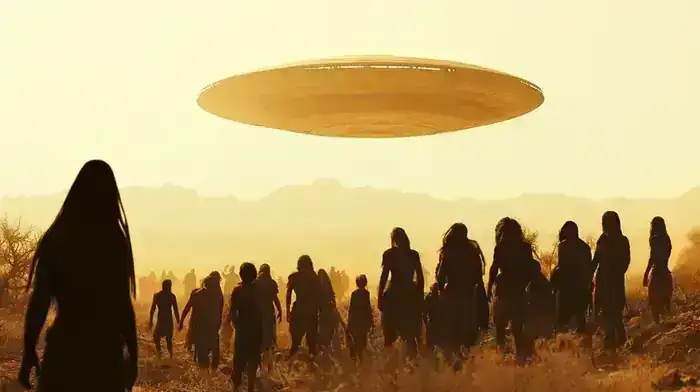

Ancient astronaut theory — paleocontact — holds that extraterrestrials visited Earth in prehistory, were mistaken for gods, and either taught humanity or engineered it. It is the best-selling fringe theory of the last sixty years, and it has a genuine intellectual lineage that is worth setting out before the rebuttals.
Maps, diagrams and images



The lineage
- 1919
Charles Fort’s The Book of the Damned collects reports that science had ignored and suggests the Earth might be “property”, observed and occasionally visited. Fort was half satirist, but he supplied the frame: the anomaly as a rebuke to authority.
- 1947
The flying-saucer era begins and retro-fits history: if objects are in the sky now, they may have been then.
- 1966
Shklovskii and Sagan’s Intelligent Life in the Universe treats paleocontact as a serious possibility to be examined — and Sagan later becomes one of its sharpest critics. Both positions are consistent: the question is legitimate, the evidence is not there.
- 1968
Erich von Däniken’s Chariots of the Gods? sells in the tens of millions and turns the idea into a mass phenomenon.
- 1976
Zecharia Sitchin’s The Twelfth Planet builds an entirely different version from Mesopotamian texts: the Anunnaki, a planet called Nibiru, and human beings as a manufactured workforce.
- 1978
Robert Temple’s The Sirius Mystery argues the Dogon of Mali preserved knowledge of a companion star to Sirius.
- 2009 – present
Ancient Aliens turns the material into a television format, recycling and extending every exhibit below.
Sitchin’s specific claim
It is only fair to state it as he did, because it is a real argument with real texts behind it. Sitchin read the Sumerian and Akkadian corpus as follows: the Anunnaki were not gods but visitors from a twelfth planet, Nibiru, on a 3,600-year orbit; they came to Earth to mine gold; when their labourers rebelled they engineered a hybrid — Homo sapiens — from their own genetic material and that of existing hominids. The Sumerian “fashioning of man from clay” becomes a mythologised memory of genetic engineering; the long lifespans of the Genesis patriarchs become inherited Anunnaki longevity.
This is superficially scholarly: it cites tablets, gives transliterations, and builds a system. That is precisely why Assyriologists have answered it in detail rather than dismissing it.
The word Nibiru exists in astronomical texts, and in those texts it refers to a celestial body associated with the god Marduk — commonly understood as Jupiter, or as a crossing-point in the sky. It is not described as a planet on a 3,600-year orbit, and that orbital period is not in the tablets. Michael Heiser’s paper “The Myth of a 12th Planet” works through the occurrences one by one and shows Sitchin supplying meanings the scribes did not write.
The same critique applies to his etymologies: DIN-GIR, the Sumerian sign for “god”, is translated by Sitchin as “pure ones of the blazing rockets” — a reading that requires splitting a single noun into two and choosing a dramatic sense for a syllable that means “sharp-edged”.
And the Anunnaki themselves are, in the mainstream reading, a group of Mesopotamian deities — with a role in the underworld and in the assembly of the gods — not a species from another planet.
The exhibits, one at a time
The Palenque sarcophagus lid
The most reproduced “astronaut” image in the world: the Maya king Pakal on his tomb lid, apparently reclining in a cockpit with his hands on controls. The University of Pennsylvania Museum’s Expedition article walks through the actual iconography — Pakal is shown at the moment of death, falling into the open jaws of the underworld, with the World Tree of Maya cosmology growing from his body and a celestial bird at its crown. It is a statement about kingship and cosmic order. The “rocket” is the tree, and the “flames” are the jaws.
The Nazca Lines
Von Däniken’s argument was that the lines only make sense as runways for aircraft. The archaeology says otherwise: the geoglyphs are shallow scraped lines on desert pavement, too soft for any landing gear, many of them figures rather than straight runs, and the straight lines are consistent with processional paths and water ritual. See Mysteries for the current scholarship.
Puma Punku
The precision-cut andesite blocks at Tiwanaku in Bolivia are genuinely impressive, and the claim is that their geometry is too exact for stone tools. Experimental archaeology has repeatedly demonstrated that hard-stone working with hammerstones, abrasives and patient labour produces exactly these forms; the “impossible” joins are also explained by the blocks being recut and reused over centuries. The site has a long, well-studied construction sequence.
The Dogon and Sirius
Temple’s claim was that the Dogon knew of Sirius B — a white dwarf invisible without a telescope — before astronomers did. The anthropological record is more complicated: the ethnographies on which the claim rests were collected in a period of intense contact and include material that appears to have come from European sources, and later fieldwork by Walter van Beek found the Dogon did not maintain the system as reported. It is not a clean case of preserved ancient astronomy.
Crystal skulls
The British Museum’s skull, long presented as Aztec, has been examined with scanning electron microscopy. The tool marks show rotary wheels and abrasives that were not available in pre-Columbian Mesoamerica; the quartz matches Brazilian or Madagascan sources; and the carving lacks Aztec or Mixtec iconography. It is a nineteenth-century European fabrication made for the curiosity market. The Oxford TORCH project’s write-up gathers the studies.
The Great Pyramid
Not a mystery of construction so much as a mystery of logistics, and the logistics have been filling in fast: the Wadi al-Jarf papyri include a logbook from a work gang transporting limestone, and the workers’ village, bakeries and ramp systems at Giza have been excavated for decades. None of this requires anything but organisation, stone, copper tools and a great deal of food.
Why the theory keeps winning anyway
Because it is a moral argument disguised as a historical one. It says: these achievements are too great for the people we have been told built them. The rebuttal is not “they were simple” — it is the opposite, and it is the most interesting thing in this dossier. Ancient people were extraordinary engineers, astronomers and administrators, and the archaeological record shows them solving problems in detail. The insult in the theory is that it takes the credit away from them.
The Conversation’s 2026 assessment makes the same point from the other direction: the theory endures because it answers a modern anxiety about human potential, not because the evidence improved.
Where it overlaps with the rest of the archive
- Giants and fallen angels — Sitchin’s Anunnaki occupy the same narrative slot as the Nephilim: superior beings breeding with humans.
- Hidden technology — the “suppressed free energy” claim in Tartaria is the same shape, moved forward two centuries.
- Inner worlds — the hollow-Earth literature absorbed UFO lore wholesale; see Hollow Earth.
- Dragons and dinosaurs — both are attempts to fill the deep past with something the textbooks deny; see Dragons.
Sources for this page
- Penn Museum, Expedition, “Scholars Will Call it Nonsense” — the Palenque lid read properlypenn.museum
- Michael Heiser, “The Myth of a 12th Planet” (PDF) — Nibiru in the astronomical textsdrmsh.com (PDF)
- Hall of Maat, “The Return of Ancient Astronauts: Zecharia Sitchin Rekindles an Old Pseudoscience” — the DIN-GIR readinghallofmaat.com
- Oxford TORCH, “April Fakes: The British Museum Crystal Skull”torch.ox.ac.uk
- The Conversation, “Why some people still believe that aliens shaped ancient civilisations” (2026)theconversation.com
- Heidelberg Aegyptiaca, “Ancient Astronaut Discourse and Egypt” (PDF)prop.ub.uni-heidelberg.de (PDF)
- Discovery UK, “Legend to Launchpad: The Ancient Astronaut Theory”discoveryuk.com
Open resources on this topic
- BookAncient Astronauts May 1977 (Internet Archive, free to read)
- BookAncient Astronauts March 1977 (Internet Archive, free to read)
- BookThe case of the ancient astronauts — Gallagher, I. J., 1930- · 1977 (Internet Archive, free to read)
- PapersOpen-access articles: DOAJ · PubMed Central · Internet Archive Scholar
- BooksPublic-domain and borrowable copies: Open Library · Project Gutenberg · Google Books
Cite this page
Momin, S. (2026). Ancient Astronauts. The Larger World Archive. https://drsamonline.github.io/LARGE_GLOBE/ancient-astronauts.htmlMomin, Sohil. “Ancient Astronauts.” The Larger World Archive, 2026, https://drsamonline.github.io/LARGE_GLOBE/ancient-astronauts.html.Momin, Sohil. “Ancient Astronauts.” The Larger World Archive, 2026. https://drsamonline.github.io/LARGE_GLOBE/ancient-astronauts.html.@misc{ancient2026ancient,
author = {Momin, Sohil},
title = {Ancient Astronauts},
year = {2026},
howpublished = {The Larger World Archive},
url = {https://drsamonline.github.io/LARGE_GLOBE/ancient-astronauts.html},
note = {Last reviewed 20 November 2026}
}Last reviewed 20 November 2026 · Corrections policy · this page is not peer reviewed